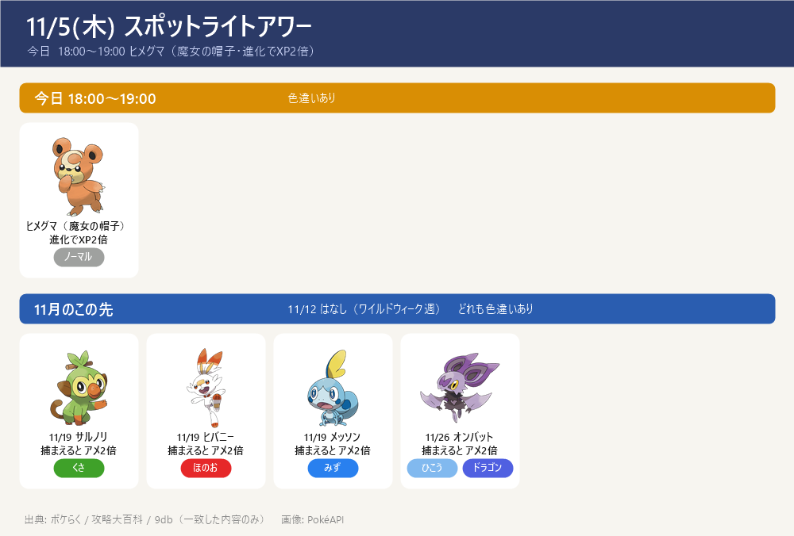
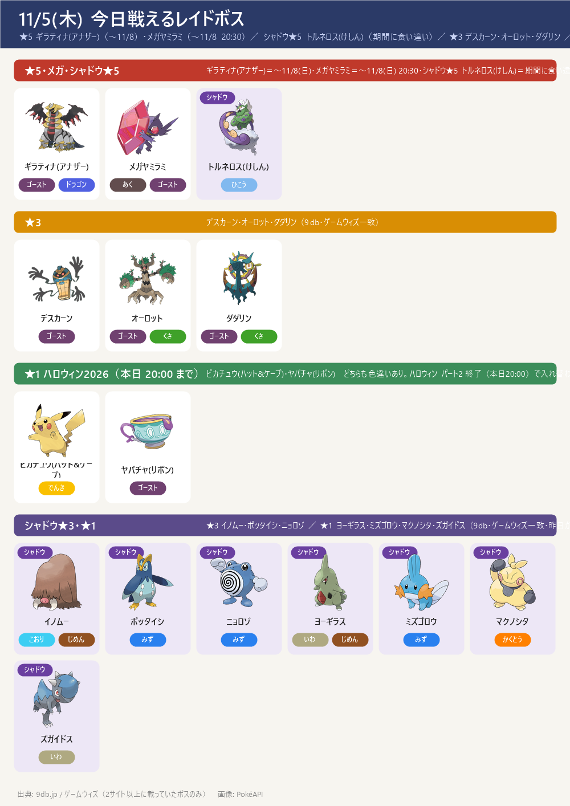
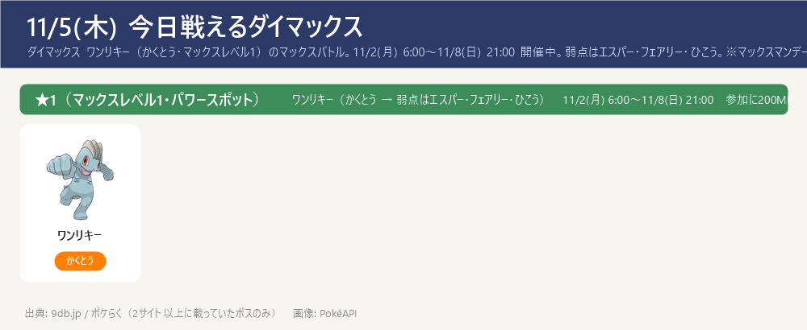
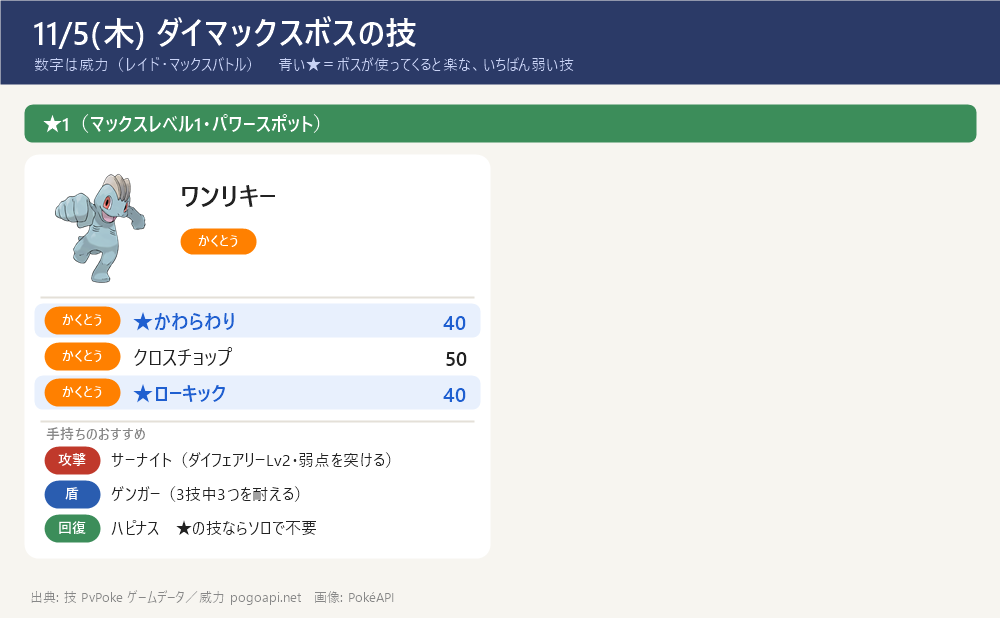

今日のポイント
- 今日 18:00〜19:00 スポットライトアワー：ヒメグマ（魔女の帽子）（進化でXP2倍・下の欄）
- ハロウィン2026 パート2 は本日 11/5(木) 20:00 で終了。20:00 で入れ替わるのはハロウィンのレイド★1枠（ピカチュウ(ハット&ケープ)・ヤバチャ(リボン)）。★5 ギラティナ(アナザー)・メガヤミラミは 11/8(日) まで継続（シャドウ★5 トルネロス(けしん) の期間はサイトで食い違い → 下記）
- ★5 ギラティナ(アナザー)（〜11/8）・メガヤミラミ（〜11/8 20:30）は引き続き登場。ギラティナの弱点はこおり・ゴースト・ドラゴン・あく・フェアリー、メガヤミラミはフェアリーのみ。どちらも色違いあり
- シャドウ★5 トルネロス(けしん)（ひこう → でんき・こおり・いわ技）は期間がサイト差（9db 11/4〜12/1 ／ 攻略大百科 11/4〜11/8・11/16〜12/1）→ ゲーム内で確認を。※シャドウレイドの★3・★1は昨日から顔ぶれが入れ替わった（下記）
- 【締切】GOパス10月の報酬受け取りは本日 11/5(木) 10:00 まで（ポイント獲得は 11/3 で終了済み。過ぎていれば受け取り済みか確認）。GOパス11月 開催中（〜12/1(火)）、無料報酬にグラードン
- 11/14(土) ダイマックス ディアルガに向けて強化を進める：カイリキー（カウンター）・ドリュウズ（マッドショット）・受けのメタグロス。ワンリキーのマックスバトルは 11/8(日) 21:00 まで続く（カイリキーのアメ集め）。くわしくはダイマックス育成順ページ
- 東京の巣は本日 9:00 から新しい期間（隔週木曜に入れ替わり）。報告が集まるまで数日かかる。巣ページは 最新の巣
スポットライトアワー

- 今日 11/5(木) 18:00〜19:00：ヒメグマ（魔女の帽子）（色違いあり） ボーナス：進化でXP2倍
- ヒメグマ→リングマへ進化（アメ50）。XP2倍のこの時間にまとめて進化すると得。しあわせタマゴを使うとさらにXPが伸びる。いらない個体は博士に送ってアメに
- 11月のこの先：11/12(木) はなし（ワイルドウィーク週）／11/19(木) サルノリ・ヒバニー・メッソン（捕まえるとアメ2倍）／11/26(木) オンバット（捕まえるとアメ2倍）
- 対象はどれも色違いあり（ポケらく・攻略大百科で一致）
今日戦えるレイドボス
★5 ギラティナ(アナザー)（〜11/8）・メガヤミラミ（〜11/8 20:30）／ シャドウ★5 トルネロス(けしん)（期間に食い違い）／ ★3 デスカーン・オーロット・ダダリン ／ ★1 ハロウィン ピカチュウ・ヤバチャ（本日20:00まで）／ シャドウ★3・★1は新しい顔ぶれ
- ★5 ギラティナ(アナザー)（ゴースト・ドラゴン）は 11/8(日) まで。弱点はこおり・ゴースト・ドラゴン・あく・フェアリー（すべて1.6倍・二重弱点なし）。色違いあり
- メガヤミラミ（あく・ゴースト）→ 弱点はフェアリーのみ。11/8(日) 20:30 まで継続（攻略大百科のメガレイド期間 10/28〜11/8）
- シャドウ★5 トルネロス(けしん)（ひこう）。弱点はでんき・こおり・いわ。期間はサイト差（9db 11/4〜12/1／攻略大百科 11/4〜11/8・11/16〜12/1）→ ゲーム内で確認を
- ★1のハロウィン ピカチュウ(ハット&ケープ)・ヤバチャ(リボン)は本日 20:00 まで（ハロウィン パート2 終了で入れ替わる枠）。どちらも色違いあり
- シャドウレイドは昨日から顔ぶれが変わった：★3 イノムー・ポッタイシ・ニョロゾ ／ ★1 ヨーギラス・ミズゴロウ・マクノシタ・ズガイドス（9db・ゲームウィズ一致）
- ※9db のレイド日程は★5 ギラティナ・メガヤミラミ・シャドウトルネロスを「11/4 5:00〜11/5 20:00」とハロウィン枠でまとめているが、攻略大百科はメガヤミラミ 11/8(日) 20:30 まで → ★5/メガは 11/8 まで続く（20:00 で入れ替わるのはハロウィンの★1枠）。終了時刻は 21:00 前後でサイト差 → ゲーム内で確認を

今日戦えるダイマックス
ダイマックス ワンリキー（かくとう・マックスレベル1）のマックスバトル。11/2(月) 6:00〜11/8(日) 21:00 開催中。弱点はエスパー・フェアリー・ひこう。※マックスマンデーは 11/2 で終了（バトル自体は 11/8 まで続く）
- ダイマックス ワンリキー（かくとう・マックスレベル1）（9db・ポケらく一致）。バトルは 11/8(日) 21:00 まで続く。参加に200MP。マックスマンデー（現地勝利でふしぎなアメXL）は 11/2 で終了
- ワンリキーは かくとう → 弱点はエスパー・フェアリー・ひこう。マックスレベル1なのでソロでも倒しやすい。攻撃はダイサイコ（メタグロス等）・ダイフェアリー（サーナイト等）で弱点を突く。盾はゴーストタイプ（かくとう技が無効）
- ねらいはカイリキー育成：ワンリキー→ゴーリキー→カイリキー。カイリキー（カウンター）は 11/14(土) ダイマックス ディアルガ戦の主力アタッカー。アメを貯めておく
- 今パワースポットに出ている★1〜★3のまとめ：今出ているダイマックスまとめを開く（★1〜★3の一覧・この後の予定）
- 【各ボスのスペシャルアタック候補】（下のカード。数字はレイド・マックスバトルでの威力。★＝ボスが使ってくると楽な、いちばん弱い技（ボスと同じタイプの技は1.2倍で計算。こちらのポケモンとの相性は見ていない）。戦闘中に技名が出たら受け役を合わせる）


ハロウィン2026 パート2（本日 11/5(木) 20:00 終了）
- 期間：11/1(日) 10:00〜本日 11/5(木) 20:00（9db・ゲームウィズ・攻略大百科・ポケらく一致）
- 20:00 で入れ替わるのはハロウィンのレイド★1枠：ピカチュウ(ハット&ケープ)・ヤバチャ(リボン)（どちらも色違いあり）。★5 ギラティナ(アナザー)・メガヤミラミは 11/8(日) まで続く
- シャドウ★5 トルネロス(けしん) の期間はサイトで食い違い（9db 11/4〜12/1 ／ 攻略大百科 11/4〜11/8・11/16〜12/1）→ ゲーム内で確認を
- イベント中の目玉だった色違いボチ（進化でハカドッグ）・メガヤミラミの追加スペシャルアタック（スーパーマックスレベル解放）も 20:00 まで
- ボーナス（GOパス連動）：ランク10到達で捕獲時のアメ2倍（デラックスは3倍）、ランク20到達で捕獲時のほしのすな2倍（デラックスは3倍）
サカキ対策（シャドウゼクロム）：攻略ページへ（別ページ）
締め切り・やること：まとめページへ（別ページ）
この先の予定（タップで開閉）
- 本日 11/5(木) 10:00 GOパス10月の報酬受け取り期限（ポイント獲得は 11/3 で終了済み）
- 本日 11/5(木) 9:00 東京の巣が新しい期間に（隔週木曜 9:00 入れ替わり）
- 本日 11/5(木) 18:00〜19:00 スポットライトアワー：ヒメグマ（魔女の帽子・進化でXP2倍）
- 本日 11/5(木) 20:00 ハロウィン2026 パート2 終了 → 入れ替わるのはハロウィンのレイド★1枠（ピカチュウ(ハット&ケープ)・ヤバチャ(リボン)）。★5 ギラティナ(アナザー)・メガヤミラミは 11/8(日) まで継続。シャドウ★5 トルネロス(けしん) の期間はサイトで食い違い（下記）
- 11/8(日) ★5 ギラティナ(アナザー)（21:00頃）・メガヤミラミ（20:30）終了／ ダイマックス ワンリキー 21:00 終了／ GOパス10月デラックスのキラチャーム使用期限 23:59
- 11/9(月)〜11/15(日) はデイリーディスカバリー休止（ワイルドウィーク週のため、おひろめデイ等なし）。11/9(月) 10:00〜 ワイルドウィーク2026 開始
- 11/14(土)・15(日) GOワイルドエリア：グローバル（ダイマックス ディアルガ・パルキア）→ ボス別の攻略ページ・育成順ページ作成済み（GitHub にも公開）
- 11/16(月)〜 クレセリア・ダークライの★5（〜11/24）／ シャドウ★5 トルネロス(けしん) 再登場（〜12/1・攻略大百科）
- 11/19(木) スポットライトアワー：サルノリ・ヒバニー・メッソン（捕まえるとアメ2倍）。※11/12(木) はワイルドウィークのためスポットライトアワーなし
サイトで違っていた点（タップで開閉）
- ★5/メガの終了日: 9db のレイド日程は★5 ギラティナ・メガヤミラミ・シャドウトルネロスを「11/4 5:00〜11/5(木) 20:00」とハロウィン枠でまとめているが、攻略大百科はメガレイド 10/28〜11/8(日)20:30 でメガヤミラミ → ★5 ギラティナ・メガヤミラミは 11/8 まで継続とした（20:00 で入れ替わるのはハロウィンの★1枠）
- シャドウ★5 トルネロス(けしん)の期間: 9db は 11/4〜12/1 の一続き、攻略大百科は 11/4〜11/8・11/16〜12/1（ワイルドウィーク中は中断の可能性）→ ゲーム内で確認を
- ギラティナ(アナザー)の開始時刻: 9db 5:00／ポケらく 6:00、終了時刻も 21:00 前後でサイト差 → ゲーム内で確認を
- シャドウレイドの顔ぶれ: 昨日（★3 オコリザル・キルリア・ドラピオン／★1 ゴース・ワニノコ・タテトプス・フカマル）から本日は ★3 イノムー・ポッタイシ・ニョロゾ／★1 ヨーギラス・ミズゴロウ・マクノシタ・ズガイドス に入れ替わり（9db・ゲームウィズ一致）
- ダイマックス ワンリキーの★区分: ポケらくは「マックスレベル1」、9db は「★2」と表記 → 当ノートはマックスレベル表記に合わせ ★1（マックスレベル1）とした
- 11/12(木) スポットライトアワー: ポケらくは「開催なし」（ワイルドウィーク週）→ 載せず
- ダイマックスボスの技候補はゲームデータ(PvPoke)から（おんがえし・やつあたりは除外）、威力は pogoapi.net
出典: 9db.jp/pokemongo（レイド日程 data/2308・開催イベント一覧 data/4351・マックスバトル data/20859）／pokemon.gamepedia.jp/go（攻略大百科 今月のイベント archives/77843）／pokemongo.gamewith.jp（レイド show/60906）／pokemongo-raku.com（マックスバトル post95707・スポットライトアワー post20283）／pvpoke.com ゲームデータ（技候補）
画像: PokéAPI ／ 2サイト以上で一致した情報だけを載せています